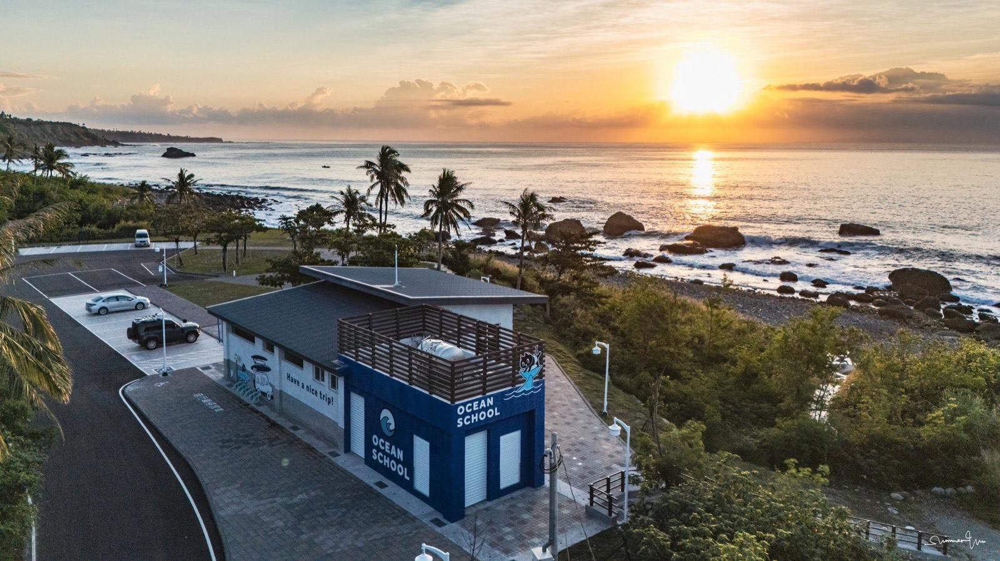

案例影像


位於臺東東河渚橋海岸的園區，不只提供看海與休憩，也承載海洋教育、親海安全及地方文化。傑弗德從餐飲概念、在地食材與供應條件出發，讓餐點成為旅客認識海洋、漁產與東海岸生活的味覺入口。

景觀休憩區的餐飲需要回應旅途中的取用速度與外帶便利，也要與園區的海洋教育理念產生連結；偏遠海岸場域另有供應、保存及現場製作條件，不能直接套用一般市區餐廳模式。
將餐飲定位為深度旅遊的「味覺入口」，以披薩與快餐等熟悉形式降低體驗門檻，再把鬼頭刀、燻肉、馬告及原住民族風味放進產品，讓地方內容能真正被旅客品嚐。
專案建立一套適合景觀休憩區與外帶需求的在地海洋餐飲方向，使餐飲不再只是園區的附屬販售，而能連結地方漁產、族群文化、海洋環境與旅遊體驗。
01 ／ 案例背景
KURORO AQUA 浪潛水海洋園區坐落於臺東縣東河鄉渚橋海岸，地址為臺東縣東河鄉 12-10，導航地標為渚橋休憩區。這是由 KURORO 與浪潛水共同打造的開放式海洋教育園區，場域結合海景休憩、海洋教育、親海安全、潛水與水域體驗，也透過活動串聯阿美族文化、海象觀察、環境感知及東海岸生活；公開資料顯示，園區於 2026 年 2 月 22 日已有正式開幕活動。餐飲是整體旅程的一部分，但傑弗德的參與範圍聚焦於餐飲概念、食材、供應商與供應鏈，並配合園區既有識別發展。
02
表面上看來，休憩區需要的是方便旅客購買的披薩與快餐；真正的問題是，餐飲能否同時符合旅行速度、場域營運與園區理念。若產品只求快速方便，便與任何休息站沒有差異；若只強調文化與生態，又可能提高理解與取用門檻。
03
04
為什麼：園區希望旅客理解海洋環境與東海岸生活；如果餐飲與這些內容無關，便錯失最容易被感受與記住的接觸點。
影響：以餐點承接園區故事，讓旅客不只從課程與景觀認識地方，也能透過味道連結漁產、族群文化與海洋環境。
為什麼：旅途中需要方便取用與帶走，過於複雜的餐飲形式不利於景觀休憩區的使用情境。
影響：以披薩及快餐等容易理解、方便分享與外帶的形式承接地方食材，使不同年齡與旅遊型態的顧客都能輕鬆接近。
為什麼：海洋、地方與原住民族文化若只出現在命名或圖像中，顧客無法從餐飲本身理解其關係。
影響：將鬼頭刀、燻肉、馬告等食材與風味放進產品開發，以較西式的熟悉形式呈現東海岸的地域特色。
為什麼：偏遠海岸場域的供應頻率、保存設備與現場製作條件，會直接影響食材能否穩定使用。
影響：同步評估供應商、供應鏈、保存及製作方式，使料理方向不只具有地方意義，也能回應實際營運條件。
05
06
將餐飲設定為連結海洋教育與東海岸旅行的味覺入口。
以鬼頭刀、燻肉、馬告等內容建立地域與文化辨識。
以披薩、快餐等方式回應旅客的取用、分享與外帶需求。
檢視供應商、保存與現場製作條件，使料理方向符合海岸場域。
案例影像
07 ／ 成果
專案已建立適合景觀休憩區與外帶情境的在地海洋餐飲方向：以熟悉的產品形式承接旅途需求，再用鬼頭刀、燻肉、馬告等內容連結地方漁產、族群文化與海洋環境。
以上為質性觀察與階段性成果說明，實際執行內容依合約範圍為準，不代表對特定營業額、獲利或回本時間的保證。
如果你正在準備開店、轉型，或發現原本有效的方法逐漸失去作用，我們可以先從釐清問題開始。